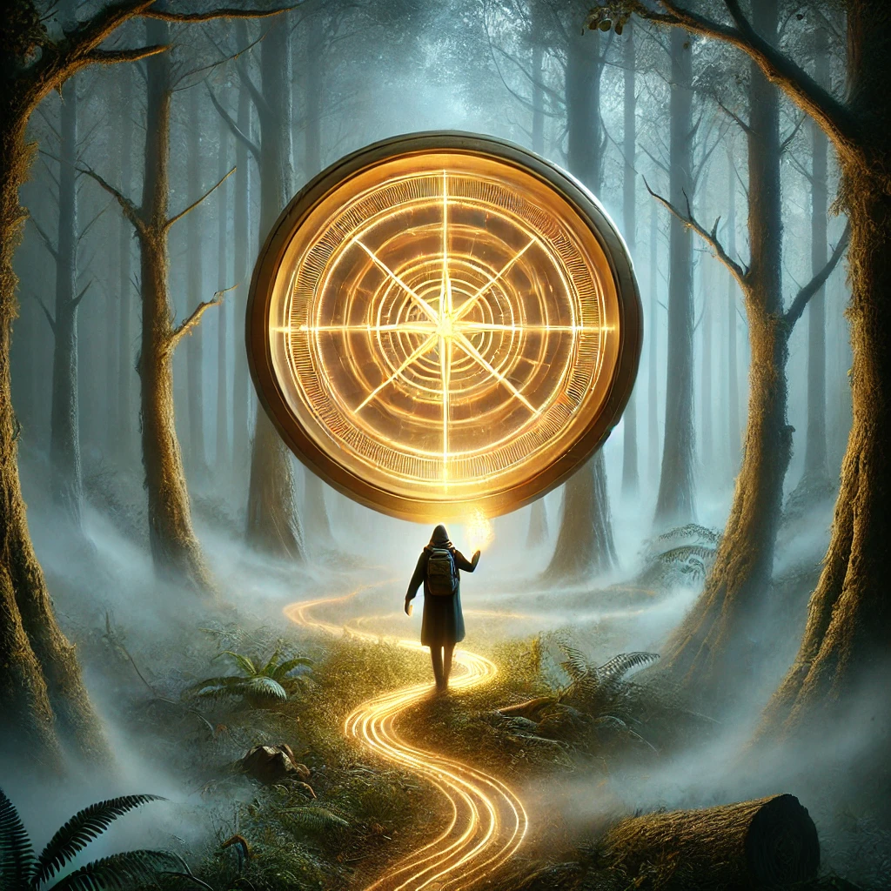

Ignoring the desire to analyze or decode the glyphs, you let your mind quiet and allow your instinct to guide you. The compass glows warmly in your hand, its glyphs shifting and pulsing with a rhythm that seems to sync with your heartbeat. Without overthinking, you begin walking.
The mist thickens, and the forest feels alive, the trees humming faintly as if acknowledging your presence. The compass tugs you left, then right, weaving a path through the unknown. Each step feels deliberate, as though you're not choosing the path but simply following one already laid out for you.
“The flow of the unseen is not meant to be understood, only trusted,” whispers a voice that feels like your own yet distant.

What happens next?